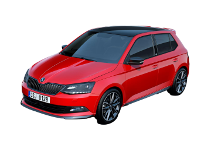

Historie modelu



Škoda Fabia třetí generace (interní označení SK260) byla představena začátkem října 2014 na Pařížském autosalonu. V ČR se prodej spustil 11. listopadu. Po designové stránce má nová Fabia oproti druhé generaci sportovnější vzhled, je o devět centimetrů širší, o tři centimetry nižší a má o 19 mm větší rozvor náprav.
V nabídce jsou kola o rozměrech 14 až 17 palců. Poprvé se v modelu Fabia objevuje systém nouzového brzdění Front Assist, adaptivní tempomat nebo také Asistent pro rozpoznání únavy řidiče. Poprvé chybí sportovněji založená verze RS, a také chybí xenonové světlomety, které například první generace měla. Nahrazují je projektorové světlomety.
Cena Fabie III hatchback startovala na 279 900 Kč, kombi pak na 329 900 Kč. V roce 2021 Fabii combi Tour s motorem 1.0 TSI 70 kW (95 koní) ve výbavě Active v barvě Modrá Energy s 15'' ocelovými koly stála 334 900 Kč. Základní výbava combi Tour Active: elektrické ovládání oken vpředu, 6,5'' infotainment, černý střešní nosič a víčko nádrže se škrabkou na led.
V létě 2018 byl představen facelift, který kromě upravených nárazníků, světlometů a jinak tvarované masky chladiče, přinesl lepší výbavu již od základu. Fabia také dostala zcela nové prvky výbavy, jako full LED světlomety, hlídání mrtvého úhlu, možnost až 18" kol, pulzní ovládání všech elektrických oken, aj. Designové změny se odehrály i v interiéru, kde přibyla možnost nových dekorů palubní desky, potahů, či například černé stropnice. Oba TSI agregáty zároveň obdržely filtr pevných částic, z důvodu nových emisních měření WLTP.
Paleta nových benzinových motorů generace EA211, vycházející z techniky MQB, zahrnuje jednotky se třemi a čtyřmi válci. Tříválce 1,0 MPI mají nepřímé vstřikování paliva, tříválce 1,0 TSI a čtyřválce 1,2 TSI jsou vybaveny přímým vstřikováním paliva a jsou přeplňovány turbodmychadlem. Výkonové spektrum nabízených motorů sahá od 44 kW až do 81 kW. Pro naftovou motorizaci lze zvolit jednu ze tří výkonových variant nového tříválce 1,4 TDI s blokem motoru z hliníkové slitiny. Ve všech případech se jedná o turbodmychadlem přeplňovaný agregát s přímým vstřikováním paliva Common Rail.
Výbavy:
Active
Ambition
Joy (nenabízí se pro tuzemský trh)
Style
Scoutline (pouze pro Combi)
Monte Carlo (sportovněji založená verze)
Trumf (akční výbava)
Výroba byla ukončena v roce 2022.
Motory
modelová řada Fabia - 3. generace disponovala o něco chudší nabídkou motorů. Zde se již naplno projevil trend downsizingu.
Tato modelová řada již nabízela pouze benzínové a naftové motory.
Škoda Fabia III
| typ motoru |
roky výroby |
výkon |
| 1,0 MPi | 2014 - 2021 | 44KW |
| 1,0 MPi | 2014 - 2021 | 55KW |
| 1,0 TSI | 2014 - 2021 | 70KW |
| 1,0 TSI | 2014 - 2021 | 81KW |
| 1,2 TSI | 2014 - 2021 | 66KW |
| 1,2 TSI | 2014 - 2021 | 81KW |
| 1,4 TSI | 2014 - 2021 | 92kW |
| 1,4 TDI | 2015 - 2021 | 55KW |
| 1,4 TDI | 2014 - 2021 | 66KW |
| 1,4 TDI | 2014 - 2021 | 77KW |
Škoda Fabia III Combi

| typ motoru |
roky výroby |
výkon |
| 1,0 MPi | 2014 - 2022 | 44KW |
| 1,0 MPi | 2014 - 2022 | 55KW |
| 1,0 TSI | 2014 - 2022 | 70KW |
| 1,0 TSI | 2014 - 2022 | 81KW |
| 1,2 TSI | 2014 - 2022 | 66KW |
| 1,2 TSI | 2014 - 2022 | 81KW |
| 1,4 TDI | 2015 - 2022 | 55KW |
| 1,4 TDI | 2014 - 2022 | 66KW |
| 1,4 TDI | 2014 - 2022 | 77KW |
recenze